Como ya se comentó en manuales anteriores, nuestras ediciones digitales contienen otra serie de módulos además de la propia digitalización de los libros. Algunos de esos módulos recogen por tipologías los contenidos interactivos que hemos ido enlazando dentro del propio libro como por ejemplo actividades, multimedia, etc. y otros son módulos independientes como el generador de evaluaciones. En este manual vamos a ver como se trasladan los contenidos que ya tenemos enlazados en el libro, para que aparezcan también en los módulos que les corresponde además de la ubicación en la que ya los habíamos incluido.
Para poder logarse en el CAT es necesario disponer de:

Para acceder al Script debemos entrar en la herramienta Markers Editor en la zona del TOC:
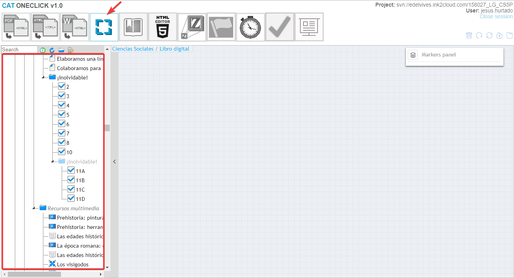Es importante resaltar, que esta herramienta debe utilizarse en fases avanzadas del montaje de un libro, cuando ya se ha realizado el enlace de los hotspots.
Recordaremos que, por regla general, las actividades o ejercicios, se han ubicado en el TOC como ítems hijos de cada una de las páginas a las que pertenecen, y que el resto de los contenidos interactivos se han ubicado dentro del apartado de Recursos Multimedia de cada unidad perfectamente ordenados según el orden de aparición en el libro.
Si analizamos el TOC y plegamos el ítem Libro digital, veremos que al final existen una serie de ítems a su mismo nivel en el árbol que hasta ahora se encuentran vacíos de contenido:
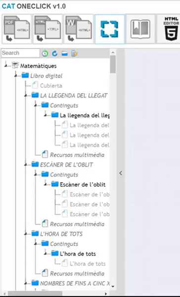Estos ítems, serán los contenedores del material de los módulos que describíamos en la introducción:
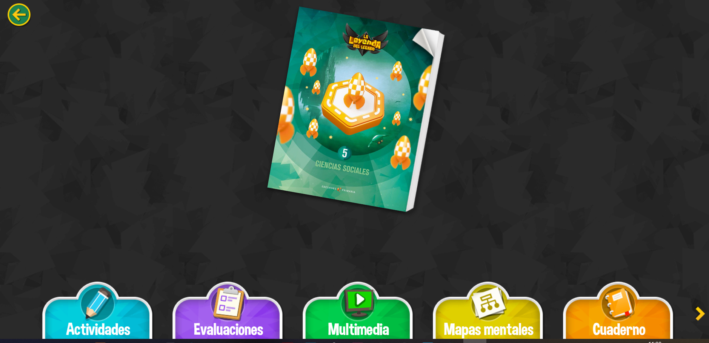Es decir, en el módulo de actividades, deben volcarse todas las actividades que hayamos enlazado en el libro, en el de multimedia los contenidos de Recursos multimedia (audios, videos, dz, …) etc.
Por tanto, el script debe utilizarse cuando los mencionados contenidos han sido enlazados previamente. Antes de acceder al script, es imprescindible realizar un repaso previo de todo el TOC, asegurándose que todos los ítems hijos de contenidos interactivos están perfectamente ubicados y ordenados en las páginas y/o epígrafes de Recursos multimedia, y que no hay duplicidades de ninguno de ellos.
Una vez realizada la revisión, pulsamos el icono del rayo que hay en la parte superior del TOC. En la pantalla seleccionamos manifiesto editado (sale por defecto), pulsamos Modificar, nos aparecerá una pantalla que indica las operaciones que ha realizado el script y esperamos a que el comit se haya realizado. Tras ello, podremos cerrar la pantalla:
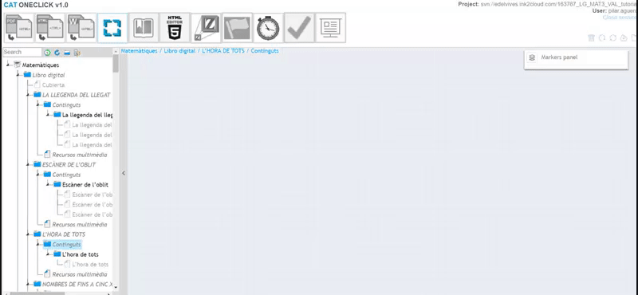Esta operación es delicada, ya que modifica el manifiesto del libro, en esta fase, JAMÁS SE SELECCIONARÁ LA OPCIÓN DE MANIFIESTO VIRGEN, ya que podríamos arruinar todo el trabajo realizado hasta la fecha en el libro. Este uso del script sólo se realiza en el momento de la creación del manifiesto, como se explicó en el:
Siempre, después de aplicar el Script, es necesario realizar una revisión exhaustiva de los contenidos que se han volcado en los módulos de actividades y multimedia, asegurándose que no haya duplicidades, nombres incorrectos, etc. Si se dieran cualquiera de estos supuestos, habría que corregirlos en el libro digital y volver a pasar el script. Este proceso se realizará tantas veces sea necesario hasta que quede perfecto, por tanto, el uso del script, es un proceso que habitualmente realiza un editor avanzado además de que es necesario que conozca a la perfección el contenido total que abarca el libro en cuestión.
Una vez pasado el script, se refresca el TOC y observamos que en el módulo de Actividades se ha creado una réplica de cada una de las unidades del libro que contiene un ítem clon de todas las actividades de cada unidad renombradas con la numeración de forma correlativa:
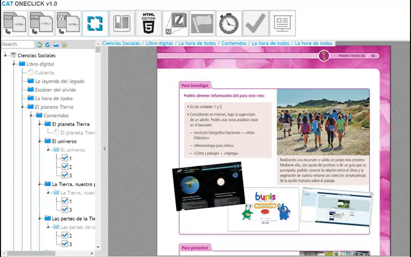El propio script, rellena los campos de como se denominan las unidades. Por defecto, y como se aprecia en el ejemplo que vemos invierte los campos Title y description de la unidad de partida del libro digital:
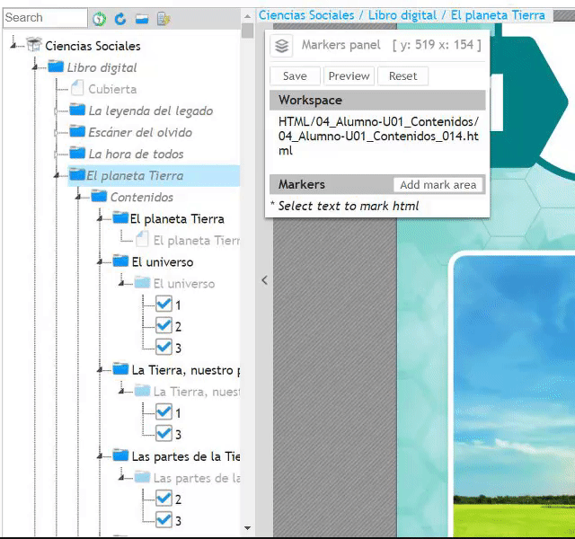Sin embargo, este título puede ser modificado para que el script renombre las unidades con cualquier otro epígrafe. Para ello, tal y como se explicó en el manual del toc para el caso especial de las unidades trimestrales
al renombrar el epígrafe de la unidad base del libro con el editor, pulsando el botón de Advanced Editor, se nos abre una nueva pantalla:
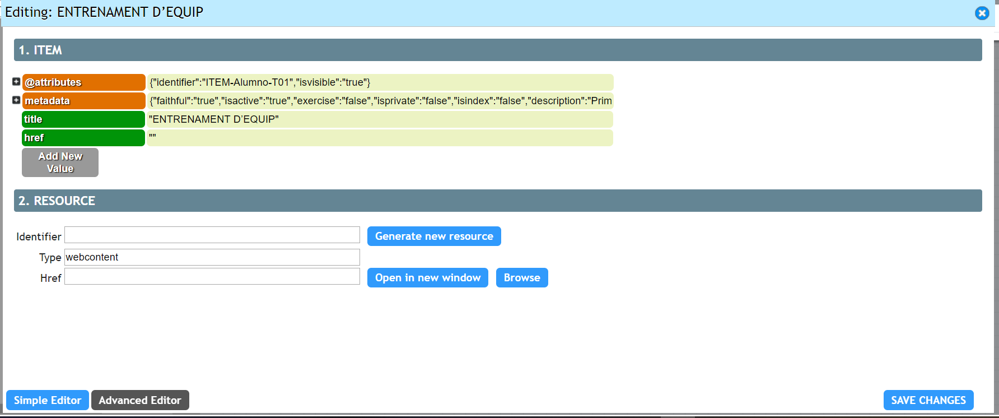Desplegamos el campo metadata pulsando el +:
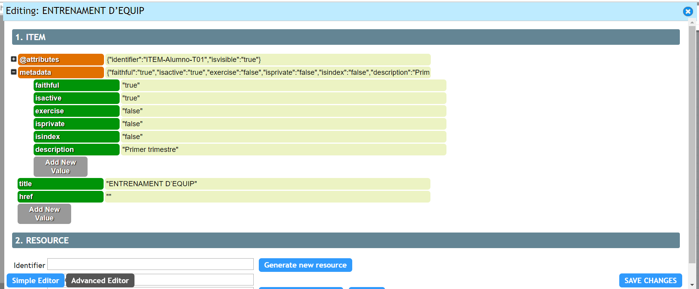Pulsamos Add New Value
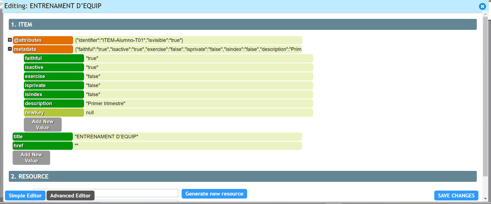En el campo newKey teclearemos: description_script_activity y en el campo null teclearemos: "Trimestre t1" (siendo t2 y t3 en el caso de los otros dos trimestres)
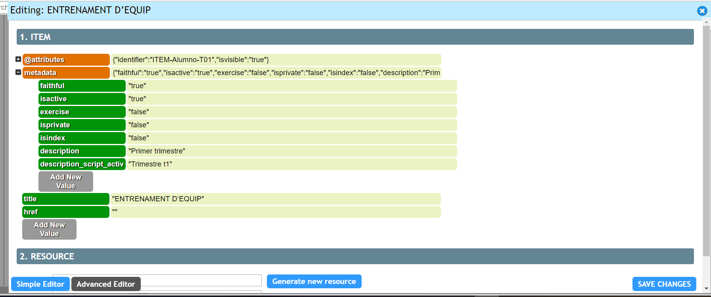Pulsamos SAVE CHANGES y esperamos como siempre a que el comit se haya producido.
Si quisiéramos que apareciera otro texto sustituiríamos “Trimestre t1” por el nuevo texto deseado.
De esta forma en el libro digital, nuestro módulo de actividades mostraría el siguiente contenido:
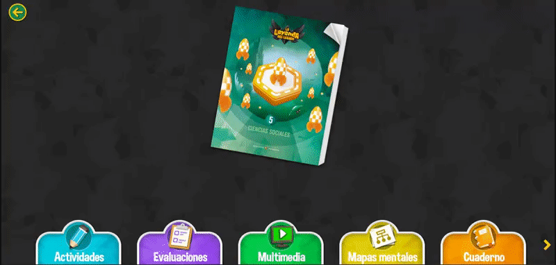En el caso del módulo Multimedia (no confundir con el epígrafe de Recursos Multimedia de cada una de las unidades del libro) se ha creado una réplica de cada una de las unidades del libro que contiene un ítem clon de todos los recursos multimedia de cada unidad, con el mismo renombrado que tuviera cada uno de ellos en su ubicación original:
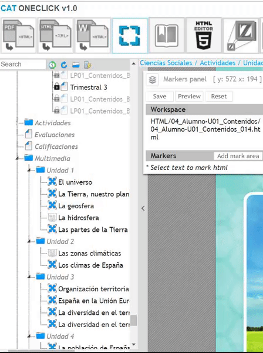Como en el caso anterior, el propio script, rellena los campos de cómo se denominan las unidades. Por defecto, y como se aprecia en el ejemplo que vemos invierte los campos Title y description de la unidad de partida del libro digital:
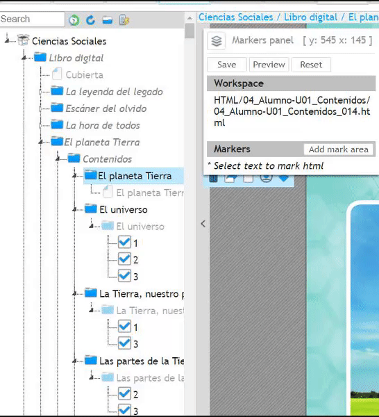De la misma forma que en el módulo de actividades este título puede ser modificado para que el script renombre las unidades con cualquier otro epígrafe (habitualmente en el caso de multimedia no se realiza, pero el cat está preparado para ello).
Se realizan las mismas operaciones indicadas en el caso de actividades, pero en los metadatos, al añadir uno nuevo (Add New Value), en el campo newKey teclearemos: description_script_multimedia y en el campo null teclearemos: "xxxx" siendo xxx el nuevo título que queramos que nos introduzca el script.
De esta forma en el libro digital, nuestro módulo de actividades mostraría el siguiente contenido:
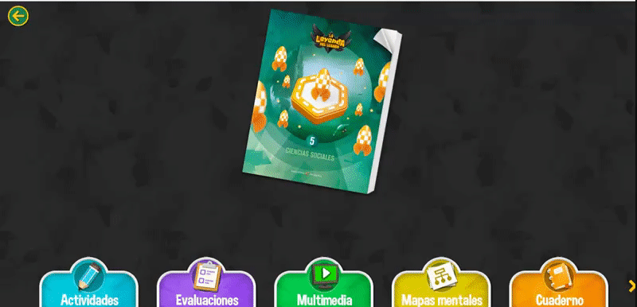